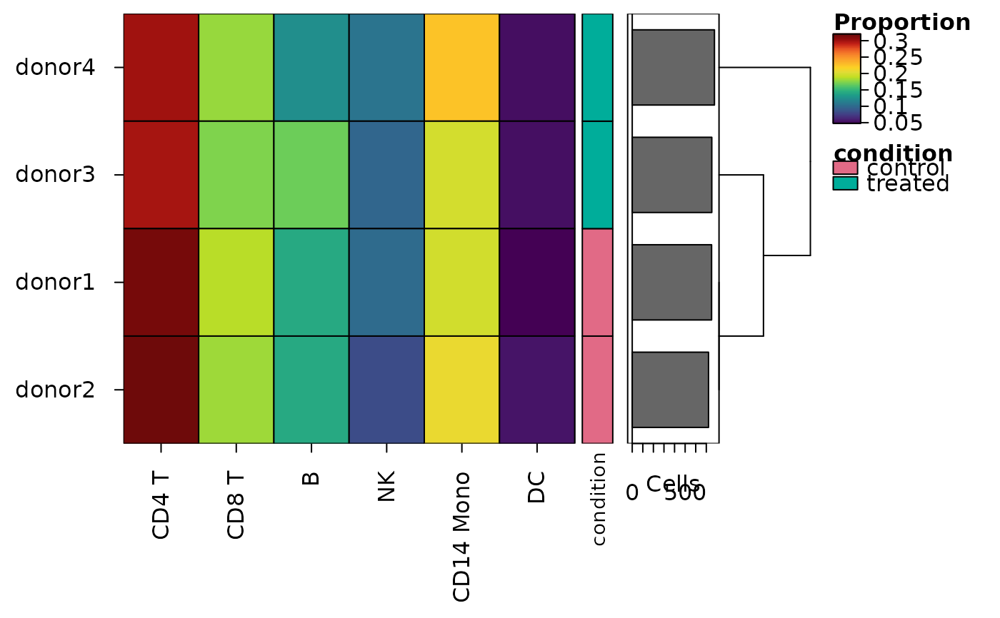

Heatmaps of the make-up of samples: the share of each group of cells
Source:R/heat_map_composition.R
heat_map_composition.Rdheat_map_composition() counts the cells of each group (e.g. cell
type or cluster) in each sample and draws the share of each sample's cells
in each group, one row per sample, with the samples clustered by their
make-up and annotated by their metadata (e.g. condition or donor) - the
composition heatmap of cohort studies. Only the metadata of the cells is
read, so any single-cell data, or a data.frame of the cells' metadata, can
be given.
Usage
heat_map_composition(
x,
group_by,
sample_by,
annotation_by = NULL,
values = c("proportion", "percent", "count", "clr"),
bars = TRUE,
tree_y = TRUE,
...
)Arguments
- x
single-cell data (see
heat_map) or a data.frame of the metadata of the cells, one row per cell.- group_by
the group of each cell, drawn as columns: a column of the metadata (or several, combined), or one value per cell.
- sample_by
the sample of each cell, drawn as rows, as for
group_by.- annotation_by
columns of the metadata that describe the samples (e.g.
"condition"), drawn as annotation tracks beside the rows; a column with more than one value in a sample is an error.- values
what each cell of the heatmap shows:
"proportion"(default, the share of the sample's cells),"percent","count"(the number of cells) or"clr"(the centred log-ratio, on a diverging colour scale centred at 0).- bars
logical, whether to draw the number of cells of each sample as bars beside the rows, set to
TRUEby default.- tree_y
logical, whether to cluster the samples, set to
TRUEby default.- ...
other arguments of
heat_map, which replace those set here (e.g.tree_x = TRUEto cluster the groups, orcell_text = TRUEto write the values in the cells).
Value
an object of class heat_map, as returned by
heat_map; heat_map_info()$data holds the values, one
row per sample.
Details
Shares are compositions - they add up to 1 in each sample, so one group
growing shrinks the others. values = "clr" draws the centred
log-ratio of the counts instead (the log of each group's share less the
mean log share of the sample, with half a cell added to every count so
that empty groups have a finite log), the usual transform for comparing
compositions (Aitchison 1982): a group's value no longer depends on the
others, and samples are clustered on distances suited to compositions.
References
Aitchison J (1982). The statistical analysis of compositional data. Journal of the Royal Statistical Society: Series B 44(2), 139-160. doi:10.1111/j.2517-6161.1982.tb01195.x
See also
heat_map_summarise (stack_by) for the make-up
of groups as stacked bars
Examples
cells <- heat_map_example("rna")
heat_map_composition(
cells,
group_by = "cell_type",
sample_by = "sample",
annotation_by = "condition",
popup = FALSE
)
